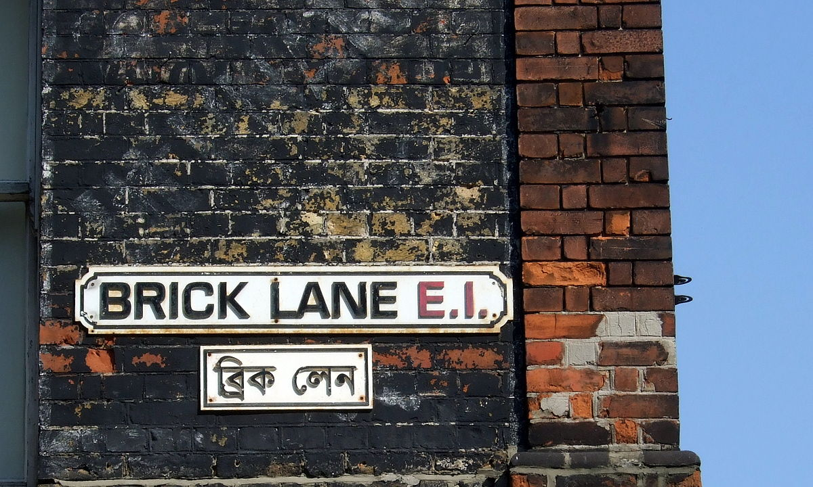

Brick Lane
Brick Lane is a street in east London, in London Borough of Tower Hamlets. It is known as Banglatown as it is the heart of the Banglaeshi-Sylheti community and popular for its curry houses.
Brick Lane is a street in east London, in London Borough of Tower Hamlets. It is known as Banglatown as it is the heart of the Banglaeshi-Sylheti community and popular for its curry houses.
The Tower of London is one oth the most visited historical attractions in the capital. It is located right next to the Tower Bridge. The towering fortress was build 900 years ago. Not only torture, prisoners or weapons where held there but also exotic animals. Some of these animals included the lions of King John, a polar bear, an eliphant and three leopards of Henry |||. You will be guided thorugh the catle by a costume dressed Yeoman Warders. As the tower attracts a lot of people daily you should be there a bit earlier than the masses to get a good look at the Crown Jewels. Another more curel attraction can be found in the White Tower which includes a troture tool collection. The Tower also redisplays a Line of Kings which can be dated back to the 1680s. Children are very welcomed as well and attratced by swordsmanship games, coin-minting activities and kid-sized longbows.
The Sutton House is known as the oldest house in east London. It is a red-brick house and was built in 1535 for Sir Ralph Sadleir. He was the first secretary of state form Henry the V|||. A fun fact about it is that it possibly has the oldest loo in London and includes a gardrobe out of the 16th century. Please note that it is closed January each year.